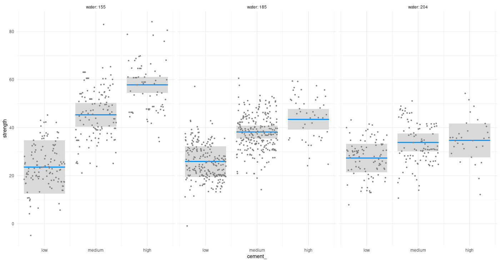

How do you motivate, or come up with a story around Gaussian Process Regression on a blog primarily dedicated to deep learning?
Easy. As demonstrated by seemingly unavoidable, reliably recurring Twitter “wars” surrounding AI, nothing attracts attention like controversy and antagonism. So, let’s go back twenty years and find citations of people saying, “here come Gaussian Processes, we don’t need to bother with those finicky, hard to tune neural networks anymore!”. And today, here we are; everyone knows something about deep learning but who’s heard of Gaussian Processes?
While similar tales tell a lot about history of science and development of opinions, we prefer a different angle here. In the preface to their 2006 book on Gaussian Processes for Machine Learning (Rasmussen and Williams 2005), Rasmussen and Williams say, referring to the “two cultures” – the disciplines of statistics and machine learning, respectively:1
Gaussian process models in some sense bring together work in the two communities.
In this post, that “in some sense” gets very concrete. We’ll see a Keras network, defined and trained the usual way, that has a Gaussian Process layer for its main constituent. The task will be “simple” multivariate regression.
As an aside, this “bringing together communities” – or ways of thinking, or solution strategies – makes for a good overall characterization of TensorFlow Probability as well.2
Gaussian Processes
A Gaussian Process is a distribution over functions, where the function values you sample are jointly Gaussian - roughly speaking, a generalization to infinity of the multivariate Gaussian. Besides the reference book we already mentioned (Rasmussen and Williams 2005), there are a number of nice introductions on the net: see e.g. https://distill.pub/2019/visual-exploration-gaussian-processes/ or https://peterroelants.github.io/posts/gaussian-process-tutorial/. And like on everything cool, there is a chapter on Gaussian Processes in the late David MacKay’s (MacKay 2002) book.
In this post, we’ll use TensorFlow Probability’s Variational Gaussian Process (VGP) layer, designed to efficiently work with “big data”. As Gaussian Process Regression (GPR, from now on) involves the inversion of a – possibly big – covariance matrix, attempts have been made to design approximate versions, often based on variational principles. The TFP implementation is based on papers by Titsias (2009) (Titsias 2009) and Hensman et al. (2013) (Hensman, Fusi, and Lawrence 2013). Instead of \(p(\mathbf{y}|\mathbf{X})\), the actual probability of the target data given the actual input, we work with a variational distribution \(q(\mathbf{u})\) that acts as a lower bound.
Here \(\mathbf{u}\) are the function values at a set of so-called inducing index points specified by the user, chosen to well cover the range of the actual data. This algorithm is a lot faster than “normal” GPR, as only the covariance matrix of \(\mathbf{u}\) has to be inverted. As we’ll see below, at least in this example (as well as in others not described here) it seems to be pretty robust as to the number of inducing points passed.
Let’s start.
The dataset
The Concrete Compressive Strength Data Set is part of the UCI Machine Learning Repository. Its web page says:
Concrete is the most important material in civil engineering. The concrete compressive strength is a highly nonlinear function of age and ingredients.
Highly nonlinear function - doesn’t that sound intriguing? In any case, it should constitute an interesting test case for GPR.
Here is a first look.
library(tidyverse)
library(GGally)
library(visreg)
library(readxl)
library(rsample)
library(reticulate)
library(tfdatasets)
library(keras)
library(tfprobability)
concrete <- read_xls(
"Concrete_Data.xls",
col_names = c(
"cement",
"blast_furnace_slag",
"fly_ash",
"water",
"superplasticizer",
"coarse_aggregate",
"fine_aggregate",
"age",
"strength"
),
skip = 1
)
concrete %>% glimpse()
Observations: 1,030
Variables: 9
$ cement <dbl> 540.0, 540.0, 332.5, 332.5, 198.6, 266.0, 380.0, 380.0, …
$ blast_furnace_slag <dbl> 0.0, 0.0, 142.5, 142.5, 132.4, 114.0, 95.0, 95.0, 114.0,…
$ fly_ash <dbl> 0, 0, 0, 0, 0, 0, 0, 0, 0, 0, 0, 0, 0, 0, 0, 0, 0, 0, 0,…
$ water <dbl> 162, 162, 228, 228, 192, 228, 228, 228, 228, 228, 192, 1…
$ superplasticizer <dbl> 2.5, 2.5, 0.0, 0.0, 0.0, 0.0, 0.0, 0.0, 0.0, 0.0, 0.0, 0…
$ coarse_aggregate <dbl> 1040.0, 1055.0, 932.0, 932.0, 978.4, 932.0, 932.0, 932.0…
$ fine_aggregate <dbl> 676.0, 676.0, 594.0, 594.0, 825.5, 670.0, 594.0, 594.0, …
$ age <dbl> 28, 28, 270, 365, 360, 90, 365, 28, 28, 28, 90, 28, 270,…
$ strength <dbl> 79.986111, 61.887366, 40.269535, 41.052780, 44.296075, 4…It is not that big – just a little more than 1000 rows –, but still, we will have room to experiment with different numbers of inducing points.
We have eight predictors, all numeric. With the exception of age (in days), these represent masses (in kg) in one cubic metre of concrete. The target variable, strength, is measured in megapascals.
Let’s get a quick overview of mutual relationships.
ggpairs(concrete)

Checking for a possible interaction (one that a layperson could easily think of), does cement concentration act differently on concrete strength depending on how much water there is in the mixture?

To anchor our future perception of how well VGP does for this example, we fit a simple linear model, as well as one involving two-way interactions.
# scale predictors here already, so data are the same for all models
concrete[, 1:8] <- scale(concrete[, 1:8])
# train-test split
set.seed(777)
split <- initial_split(concrete, prop = 0.8)
train <- training(split)
test <- testing(split)
# simple linear model with no interactions
fit1 <- lm(strength ~ ., data = train)
fit1 %>% summary()
Call:
lm(formula = strength ~ ., data = train)
Residuals:
Min 1Q Median 3Q Max
-30.594 -6.075 0.612 6.694 33.032
Coefficients:
Estimate Std. Error t value Pr(>|t|)
(Intercept) 35.6773 0.3596 99.204 < 2e-16 ***
cement 13.0352 0.9702 13.435 < 2e-16 ***
blast_furnace_slag 9.1532 0.9582 9.552 < 2e-16 ***
fly_ash 5.9592 0.8878 6.712 3.58e-11 ***
water -2.5681 0.9503 -2.702 0.00703 **
superplasticizer 1.9660 0.6138 3.203 0.00141 **
coarse_aggregate 1.4780 0.8126 1.819 0.06929 .
fine_aggregate 2.2213 0.9470 2.346 0.01923 *
age 7.7032 0.3901 19.748 < 2e-16 ***
---
Signif. codes: 0 ‘***’ 0.001 ‘**’ 0.01 ‘*’ 0.05 ‘.’ 0.1 ‘ ’ 1
Residual standard error: 10.32 on 816 degrees of freedom
Multiple R-squared: 0.627, Adjusted R-squared: 0.6234
F-statistic: 171.5 on 8 and 816 DF, p-value: < 2.2e-16Call:
lm(formula = strength ~ (.)^2, data = train)
Residuals:
Min 1Q Median 3Q Max
-24.4000 -5.6093 -0.0233 5.7754 27.8489
Coefficients:
Estimate Std. Error t value Pr(>|t|)
(Intercept) 40.7908 0.8385 48.647 < 2e-16 ***
cement 13.2352 1.0036 13.188 < 2e-16 ***
blast_furnace_slag 9.5418 1.0591 9.009 < 2e-16 ***
fly_ash 6.0550 0.9557 6.336 3.98e-10 ***
water -2.0091 0.9771 -2.056 0.040090 *
superplasticizer 3.8336 0.8190 4.681 3.37e-06 ***
coarse_aggregate 0.3019 0.8068 0.374 0.708333
fine_aggregate 1.9617 0.9872 1.987 0.047256 *
age 14.3906 0.5557 25.896 < 2e-16 ***
cement:blast_furnace_slag 0.9863 0.5818 1.695 0.090402 .
cement:fly_ash 1.6434 0.6088 2.700 0.007093 **
cement:water -4.2152 0.9532 -4.422 1.11e-05 ***
cement:superplasticizer -2.1874 1.3094 -1.670 0.095218 .
cement:coarse_aggregate 0.2472 0.5967 0.414 0.678788
cement:fine_aggregate 0.7944 0.5588 1.422 0.155560
cement:age 4.6034 1.3811 3.333 0.000899 ***
blast_furnace_slag:fly_ash 2.1216 0.7229 2.935 0.003434 **
blast_furnace_slag:water -2.6362 1.0611 -2.484 0.013184 *
blast_furnace_slag:superplasticizer -0.6838 1.2812 -0.534 0.593676
blast_furnace_slag:coarse_aggregate -1.0592 0.6416 -1.651 0.099154 .
blast_furnace_slag:fine_aggregate 2.0579 0.5538 3.716 0.000217 ***
blast_furnace_slag:age 4.7563 1.1148 4.266 2.23e-05 ***
fly_ash:water -2.7131 0.9858 -2.752 0.006054 **
fly_ash:superplasticizer -2.6528 1.2553 -2.113 0.034891 *
fly_ash:coarse_aggregate 0.3323 0.7004 0.474 0.635305
fly_ash:fine_aggregate 2.6764 0.7817 3.424 0.000649 ***
fly_ash:age 7.5851 1.3570 5.589 3.14e-08 ***
water:superplasticizer 1.3686 0.8704 1.572 0.116289
water:coarse_aggregate -1.3399 0.5203 -2.575 0.010194 *
water:fine_aggregate -0.7061 0.5184 -1.362 0.173533
water:age 0.3207 1.2991 0.247 0.805068
superplasticizer:coarse_aggregate 1.4526 0.9310 1.560 0.119125
superplasticizer:fine_aggregate 0.1022 1.1342 0.090 0.928239
superplasticizer:age 1.9107 0.9491 2.013 0.044444 *
coarse_aggregate:fine_aggregate 1.3014 0.4750 2.740 0.006286 **
coarse_aggregate:age 0.7557 0.9342 0.809 0.418815
fine_aggregate:age 3.4524 1.2165 2.838 0.004657 **
---
Signif. codes: 0 ‘***’ 0.001 ‘**’ 0.01 ‘*’ 0.05 ‘.’ 0.1 ‘ ’ 1
Residual standard error: 8.327 on 788 degrees of freedom
Multiple R-squared: 0.7656, Adjusted R-squared: 0.7549
F-statistic: 71.48 on 36 and 788 DF, p-value: < 2.2e-16We also store the predictions on the test set, for later comparison.
linreg_preds1 <- fit1 %>% predict(test[, 1:8])
linreg_preds2 <- fit2 %>% predict(test[, 1:8])
compare <-
data.frame(
y_true = test$strength,
linreg_preds1 = linreg_preds1,
linreg_preds2 = linreg_preds2
)
With no further preprocessing required, the tfdatasets input pipeline ends up nice and short:
create_dataset <- function(df, batch_size, shuffle = TRUE) {
df <- as.matrix(df)
ds <-
tensor_slices_dataset(list(df[, 1:8], df[, 9, drop = FALSE]))
if (shuffle)
ds <- ds %>% dataset_shuffle(buffer_size = nrow(df))
ds %>%
dataset_batch(batch_size = batch_size)
}
# just one possible choice for batch size ...
batch_size <- 64
train_ds <- create_dataset(train, batch_size = batch_size)
test_ds <- create_dataset(test, batch_size = nrow(test), shuffle = FALSE)
And on to model creation.
The model
Model definition is short as well, although there are a few things to expand on. Don’t execute this yet:
model <- keras_model_sequential() %>%
layer_dense(units = 8,
input_shape = 8,
use_bias = FALSE) %>%
layer_variational_gaussian_process(
# number of inducing points
num_inducing_points = num_inducing_points,
# kernel to be used by the wrapped Gaussian Process distribution
kernel_provider = RBFKernelFn(),
# output shape
event_shape = 1,
# initial values for the inducing points
inducing_index_points_initializer = initializer_constant(as.matrix(sampled_points)),
unconstrained_observation_noise_variance_initializer =
initializer_constant(array(0.1))
)
Two arguments to layer_variational_gaussian_process() need some preparation before we can actually run this. First, as the documentation tells us, kernel_provider should be
a layer instance equipped with an @property, which yields a
PositiveSemidefiniteKernelinstance".
In other words, the VGP layer wraps another Keras layer that, itself, wraps or bundles together the TensorFlow Variables containing the kernel parameters.
We can make use of reticulate’s new PyClass constructor to fulfill the above requirements. Using PyClass, we can directly inherit from a Python object, adding and/or overriding methods or fields as we like - and yes, even create a Python property.
bt <- import("builtins")
RBFKernelFn <- reticulate::PyClass(
"KernelFn",
inherit = tensorflow::tf$keras$layers$Layer,
list(
`__init__` = function(self, ...) {
kwargs <- list(...)
super()$`__init__`(kwargs)
dtype <- kwargs[["dtype"]]
self$`_amplitude` = self$add_variable(initializer = initializer_zeros(),
dtype = dtype,
name = 'amplitude')
self$`_length_scale` = self$add_variable(initializer = initializer_zeros(),
dtype = dtype,
name = 'length_scale')
NULL
},
call = function(self, x, ...) {
x
},
kernel = bt$property(
reticulate::py_func(
function(self)
tfp$math$psd_kernels$ExponentiatedQuadratic(
amplitude = tf$nn$softplus(array(0.1) * self$`_amplitude`),
length_scale = tf$nn$softplus(array(2) * self$`_length_scale`)
)
)
)
)
)
The Gaussian Process kernel used is one of several available in tfp.math.psd_kernels (psd standing for positive semidefinite), and probably the one that comes to mind first when thinking of GPR: the squared exponential, or exponentiated quadratic.3 The version used in TFP, with hyperparameters amplitude \(a\) and length scale \(\lambda\), is
\[k(x,x') = 2 \ a \ exp (\frac{- 0.5 (x−x')^2}{\lambda^2}) \]
Here the interesting parameter is the length scale \(\lambda\). When we have several features, their length scales – as induced by the learning algorithm – reflect their importance: If, for some feature, \(\lambda\) is large, the respective squared deviations from the mean don’t matter that much. The inverse length scale can thus be used for automatic relevance determination (Neal 1996).
The second thing to take care of is choosing the initial index points. From experiments, the exact choices don’t matter that much, as long as the data are sensibly covered. For instance, an alternative way we tried was to construct an empirical distribution (tfd_empirical) from the data, and then sample from it. Here instead, we just use an – unnecessary, admittedly, given the availability of sample in R – fancy way to select random observations from the training data:
num_inducing_points <- 50
sample_dist <- tfd_uniform(low = 1, high = nrow(train) + 1)
sample_ids <- sample_dist %>%
tfd_sample(num_inducing_points) %>%
tf$cast(tf$int32) %>%
as.numeric()
sampled_points <- train[sample_ids, 1:8]
One interesting point to note before we start training: Computation of the posterior predictive parameters involves a Cholesky decomposition, which could fail if, due to numerical issues, the covariance matrix is no longer positive definite. A sufficient action to take in our case is to do all computations using tf$float64:
k_set_floatx("float64")
Now we define (for real, this time) and run the model.4
model <- keras_model_sequential() %>%
layer_dense(units = 8,
input_shape = 8,
use_bias = FALSE) %>%
layer_variational_gaussian_process(
num_inducing_points = num_inducing_points,
kernel_provider = RBFKernelFn(),
event_shape = 1,
inducing_index_points_initializer = initializer_constant(as.matrix(sampled_points)),
unconstrained_observation_noise_variance_initializer =
initializer_constant(array(0.1))
)
# KL weight sums to one for one epoch
kl_weight <- batch_size / nrow(train)
# loss that implements the VGP algorithm
loss <- function(y, rv_y)
rv_y$variational_loss(y, kl_weight = kl_weight)
model %>% compile(optimizer = optimizer_adam(lr = 0.008),
loss = loss,
metrics = "mse")
history <- model %>% fit(train_ds,
epochs = 100,
validation_data = test_ds)
plot(history)

Interestingly, higher numbers of inducing points (we tried 100 and 200) did not have much impact on regression performance.5 Nor does the exact choice of multiplication constants (0.1 and 2) applied to the trained kernel Variables (_amplitude and _length_scale)
make much of a difference to the end result.6
Predictions
We generate predictions on the test set and add them to the data.frame containing the linear models’ predictions. As with other probabilistic output layers, “the predictions” are in fact distributions; to obtain actual tensors we sample from them. Here, we average over 10 samples:
We plot the average VGP predictions against the ground truth, together with the predictions from the simple linear model (cyan) and the model including two-way interactions (violet):
ggplot(compare, aes(x = y_true)) +
geom_abline(slope = 1, intercept = 0) +
geom_point(aes(y = vgp_preds, color = "VGP")) +
geom_point(aes(y = linreg_preds1, color = "simple lm"), alpha = 0.4) +
geom_point(aes(y = linreg_preds2, color = "lm w/ interactions"), alpha = 0.4) +
scale_colour_manual("",
values = c("VGP" = "black", "simple lm" = "cyan", "lm w/ interactions" = "violet")) +
coord_cartesian(xlim = c(min(compare$y_true), max(compare$y_true)), ylim = c(min(compare$y_true), max(compare$y_true))) +
ylab("predictions") +
theme(aspect.ratio = 1)

Figure 1: Predictions vs. ground truth for linear regression (no interactions; cyan), linear regression with 2-way interactions (violet), and VGP (black).
Additionally, comparing MSEs for the three sets of predictions, we see
So, the VGP does in fact outperform both baselines. Something else we might be interested in: How do its predictions vary? Not as much as we might want, were we to construct uncertainty estimates from them alone. Here we plot the 10 samples we drew before:
samples_df <-
data.frame(cbind(compare$y_true, as.matrix(yhat_samples))) %>%
gather(key = run, value = prediction, -X1) %>%
rename(y_true = "X1")
ggplot(samples_df, aes(y_true, prediction)) +
geom_point(aes(color = run),
alpha = 0.2,
size = 2) +
geom_abline(slope = 1, intercept = 0) +
theme(legend.position = "none") +
ylab("repeated predictions") +
theme(aspect.ratio = 1)

Figure 2: Predictions from 10 consecutive samples from the VGP distribution.
Discussion: Feature Relevance
As mentioned above, the inverse length scale can be used as an indicator of feature importance. When using the ExponentiatedQuadratic kernel alone, there will only be a single length scale; in our example, the initial dense layer takes of scaling (and additionally, recombining) the features.
Alternatively, we could wrap the ExponentiatedQuadratic in a FeatureScaled kernel. FeatureScaled has an additional scale_diag parameter related to exactly that: feature scaling. Experiments with FeatureScaled (and initial dense layer removed, to be “fair”) showed slightly worse performance, and the learned scale_diag values varied quite a bit from run to run. For that reason, we chose to present the other approach; however, we include the code for a wrapping FeatureScaled in case readers would like to experiment with this:
ScaledRBFKernelFn <- reticulate::PyClass(
"KernelFn",
inherit = tensorflow::tf$keras$layers$Layer,
list(
`__init__` = function(self, ...) {
kwargs <- list(...)
super()$`__init__`(kwargs)
dtype <- kwargs[["dtype"]]
self$`_amplitude` = self$add_variable(initializer = initializer_zeros(),
dtype = dtype,
name = 'amplitude')
self$`_length_scale` = self$add_variable(initializer = initializer_zeros(),
dtype = dtype,
name = 'length_scale')
self$`_scale_diag` = self$add_variable(
initializer = initializer_ones(),
dtype = dtype,
shape = 8L,
name = 'scale_diag'
)
NULL
},
call = function(self, x, ...) {
x
},
kernel = bt$property(
reticulate::py_func(
function(self)
tfp$math$psd_kernels$FeatureScaled(
kernel = tfp$math$psd_kernels$ExponentiatedQuadratic(
amplitude = tf$nn$softplus(array(1) * self$`_amplitude`),
length_scale = tf$nn$softplus(array(2) * self$`_length_scale`)
),
scale_diag = tf$nn$softplus(array(1) * self$`_scale_diag`)
)
)
)
)
)
Finally, if all you cared about was prediction performance, you could use FeatureScaled and keep the initial dense layer all the same. But in that case, you’d probably use a neural network – not a Gaussian Process – anyway …
Thanks for reading!
Breiman, Leo. 2001. “Statistical Modeling: The Two Cultures (with Comments and a Rejoinder by the Author).” Statist. Sci. 16 (3): 199–231. https://doi.org/10.1214/ss/1009213726.
Hensman, James, Nicolo Fusi, and Neil D. Lawrence. 2013. “Gaussian Processes for Big Data.” CoRR abs/1309.6835. http://arxiv.org/abs/1309.6835.
MacKay, David J. C. 2002. Information Theory, Inference & Learning Algorithms. New York, NY, USA: Cambridge University Press.
Neal, Radford M. 1996. Bayesian Learning for Neural Networks. Berlin, Heidelberg: Springer-Verlag.
Rasmussen, Carl Edward, and Christopher K. I. Williams. 2005. Gaussian Processes for Machine Learning (Adaptive Computation and Machine Learning). The MIT Press.
Titsias, Michalis. 2009. “Variational Learning of Inducing Variables in Sparse Gaussian Processes.” In Proceedings of the Twelth International Conference on Artificial Intelligence and Statistics, edited by David van Dyk and Max Welling, 5:567–74. Proceedings of Machine Learning Research. Hilton Clearwater Beach Resort, Clearwater Beach, Florida USA: PMLR. http://proceedings.mlr.press/v5/titsias09a.html.
In the book, it’s “two communities”, not “two cultures”; we choose L. Breiman’s (Breiman 2001) more punchy expression just … because.↩︎
So far, we have seen uses of TensorFlow Probability for such different applications as adding uncertainty estimates to neural networks, Bayesian model estimation using Hamiltonian Monte Carlo, or linear-Gaussian state space models.↩︎
See David Duvenaud’s https://www.cs.toronto.edu/~duvenaud/cookbook/ for an excellent synopsis of kernels and kernel composition.↩︎
In case you’re wondering about the
denselayer up front: This will be discussed in the last section on feature relevance.↩︎Performance being used in the sense of “lower regression error”, not running speed. As to the latter, there definitely is a (negative) relationship between number of inducing points and training speed.↩︎
This may sound like a matter of course; it isn’t necessarily, as shown by prior experiments with variational layers e.g. in Adding uncertainty estimates to Keras models with tfprobability.↩︎